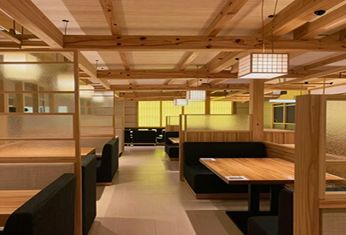

店舗情報
| 住所 | 岐阜県本巣市神海87-310 |
|---|---|
| TEL | 0581-87-3100 |
| 営業時間 | 11:00 - 19:30 (L.O 18:30) ※水曜日定休日 |
| 駐車場 | 50台 |
※送迎バスあり(10名以上、要相談)



店舗情報
【お車でお越しの方】
岐阜各務原ICから約1時間。岐阜羽島ICから約50分。モレラ岐阜から北へ車で15分
【電車でお越しの方】
(JR東海道本線)名古屋駅→大垣駅→(樽見鉄道)神海駅下車 徒歩約10分
(JR東海道本線)米原駅→大垣駅→(樽見鉄道)神海駅下車 徒歩約10分